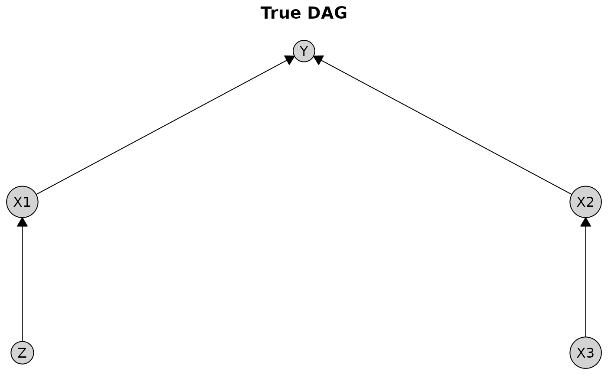

library(causalDisco)
#> causalDisco startup:
#> Java heap size requested: 2 GB
#> Tetrad version: 7.6.10
#> Java successfully initialized with 2 GB.
#> To change heap size, set options(java.heap.size = 'Ng') or Sys.setenv(JAVA_HEAP_SIZE = 'Ng') *before* loading.
#> Restart R to apply changes.
library(caugi)
#>
#> Attaching package: 'caugi'
#> The following objects are masked from 'package:causalDisco':
#>
#> edges, nodesThis vignette provides an overview of causal discovery using simulated data.
Example of causal discovery
Suppose we have this DAG:
cg <- caugi(
Z %-->% X1,
X3 %-->% X2,
X1 %-->% Y,
X2 %-->% Y
)
layout <- caugi_layout_sugiyama(cg)
plot(cg, layout = layout, main = "True DAG")
We can create data from a linear Gaussian model corresponding to the
above DAG using generate_dag_data()
data_linear <- generate_dag_data(
cg,
n = 1000,
seed = 1405
)
head(data_linear)
#> # A tibble: 6 × 5
#> Z X3 X1 X2 Y
#> <dbl> <dbl> <dbl> <dbl> <dbl>
#> 1 0.476 0.301 0.0273 0.148 -1.08
#> 2 0.497 -1.13 1.05 2.02 2.07
#> 3 0.0111 0.727 0.553 -0.719 0.966
#> 4 0.392 -0.179 2.29 0.781 0.777
#> 5 0.800 0.0492 1.51 0.840 0.213
#> 6 -1.18 0.179 0.132 0.232 0.597The R code used to generate the data is stored as an attribute of the data frame:
attr(data_linear, "generating_model")
#> $dgp
#> $dgp$X3
#> rnorm(n, sd = 0.95)
#>
#> $dgp$X2
#> X3 * -0.856 + rnorm(n, sd = 1.266)
#>
#> $dgp$Z
#> rnorm(n, sd = 1.536)
#>
#> $dgp$X1
#> Z * 0.284 + rnorm(n, sd = 1.583)
#>
#> $dgp$Y
#> X1 * 0.172 + X2 * 0.466 + rnorm(n, sd = 0.78)We can for instance use the PC algorithm from either the “tetrad”, “pcalg”, or “bnlearn” engine to learn the DAG structure from the data. Below, we set up the PC method with Fisher’s Z test, a significance level of 0.05, and use pcalg as engine.
pc_pcalg <- pc(engine = "pcalg", test = "fisher_z", alpha = 0.05)
pc_result_pcalg <- disco(data_linear, method = pc_pcalg)We can visualize the results using the plot()
function:
plot(pc_result_pcalg, layout = layout, main = "PC (pcalg)")
The first notable feature of this plot is that some edges are
directed, while others are undirected. For example, the edge from
X1 to Y is directed, indicating a causal
effect of X1 on Y, but not in the reverse
direction. In contrast, the edge between X2 and
X3 is undirected, indicating that the data alone do not
provide sufficient information to determine the causal direction. Both
orientations X2 %-->% X3 and X3 %-->% X2
are compatible with the observed conditional independencies.
We demonstrate the non-identifiability of the causal direction
between X2 and X3 by reversing the direction
of this edge in the data-generating process above and applying the PC
algorithm to the resulting data set.
cg_reverse <- caugi(
Z %-->% X1,
X2 %-->% X3,
X1 %-->% Y,
X2 %-->% Y
)
data_linear_reverse <- generate_dag_data(
cg_reverse,
n = 1000,
seed = 1405
)
pc_result_reverse <- disco(data_linear_reverse, method = pc_pcalg)
plot(pc_result_reverse, layout = layout, main = "PC (pcalg) reversed")
We learn the same causal structure as before, demonstrating that the
direction of influence between X2 and X3
cannot be determined from the data alone.
Non-linear example
Here, we simulate data with the same DAG structure as above, but with
non-linear relationships between the variables. This can again be done
using generate_dag_data(), but we need to specify the
nonlinear equations manually.
n <- 1000
data_nonlinear <- generate_dag_data(
cg,
n = n,
Z = runif(n, min = 0, max = 6),
X3 = runif(n, min = -2, max = 2),
X1 = Z^2 + rnorm(n, sd = 0.5),
X2 = sin(0.7 * X3) + rnorm(n, sd = 1),
Y = 0.6 * X1^2 + 0.4 * exp(X2) + rnorm(n, sd = 1.5),
seed = 1405
)
attr(data_nonlinear, "generating_model")
#> $dgp
#> $dgp$X3
#> runif(n, min = -2, max = 2)
#>
#> $dgp$X2
#> sin(0.7 * X3) + rnorm(n, sd = 1)
#>
#> $dgp$Z
#> runif(n, min = 0, max = 6)
#>
#> $dgp$X1
#> Z^2 + rnorm(n, sd = 0.5)
#>
#> $dgp$Y
#> 0.6 * X1^2 + 0.4 * exp(X2) + rnorm(n, sd = 1.5)If we try to use the PC algorithm with Fisher’s Z test again it will not perform well due to the non-linear relationships in the data.
pc_pcalg_nonlinear <- pc(engine = "pcalg", test = "fisher_z", alpha = 0.05)
pc_result_nonlinear <- disco(data_nonlinear, method = pc_pcalg_nonlinear)
plot(pc_result_nonlinear, layout = layout, main = "PC (pcalg) non-linear")
As expected, the PC algorithm with Fisher’s Z test does not recover the correct causal structure in this non-linear setting at all. Note, that increasing the sample size does not help.
TODO: Find something that finds correct CPDAG in nonlinear-case?
Incorporating prior knowledge
As the number of nodes increases, identifying the corresponding causal graph from observational data becomes increasingly challenging. Incorporating prior knowledge can constrain the search space, improve the accuracy of causal discovery, and, in particular, resolve cases where the data alone are insufficient to determine causal direction.
Suppose we know that v and w do not cause
x. This can be specified as follows:
kn <- knowledge(
data_linear,
X1 %!-->% Z, # X1 does not cause Z
X2 %!-->% X3 # X2 does not cause X3
)
plot(kn)
We can then incorporate this knowledge into the PC algorithm as follows:
pc_pcalg <- pc(engine = "bnlearn", test = "fisher_z", alpha = 0.05)
pc_result_with_knowledge <- disco(data_linear, method = pc_pcalg, knowledge = kn)
plot(pc_result_with_knowledge, layout = layout, main = "PC (pcalg) with knowledge")
It now correctly recovers the true DAG structure with this extra knowledge.
For more information about how to incorporate knowledge, see the knowledge vignette.